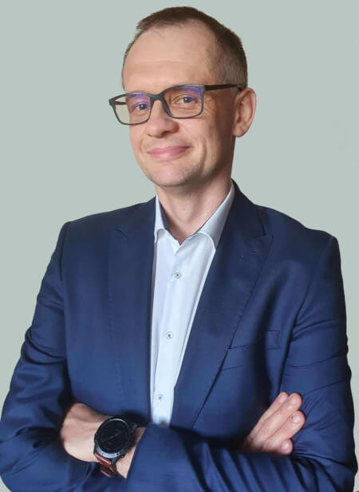

I’m an associate professor at AGH University of Science and Technology of Faculty of Materials Science and Technology in the Department of Silicates and Macromolecular Compounds.
The fields of my scientific interests are:
- Special glasses for various applications
- Waste immobilization
- Glass network simulations
- Multiferroic materials
- Magnetic materials
At the moment I’m focused on phosphate glasses for various applications as biomaterials, electronics and waste immobilization. My works are devoted to an understanding of changes in a glass network on properties.
Read more →